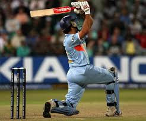
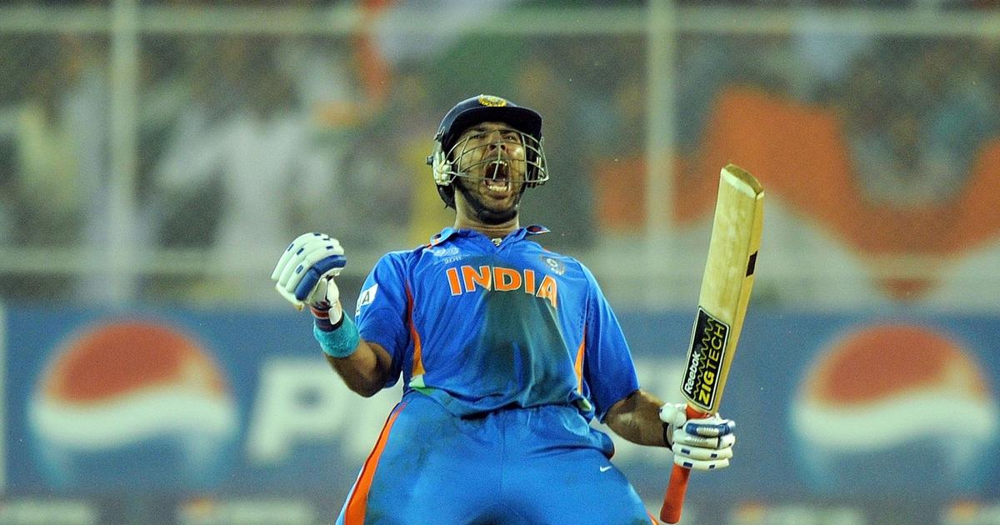

Yuvraj Singh
Role: All-rounder
Bio: An explosive batsman and a handy left-arm spinner, Yuvraj played a key role in India's 2007 T20 World Cup and 2011 ODI World Cup victories.
Career Stats
| Format | Matches | Innings | Not Outs | Runs | High Score | Average | Balls Faced | Strike Rate | 100s | 50s | Fours | Sixes |
|---|---|---|---|---|---|---|---|---|---|---|---|---|
| Test | 40 | 63 | 11 | 1900 | 249 | 33.9 | 3074 | 52.0 | 3 | 11 | 275 | 74 |
| ODI | 304 | 278 | 52 | 8700 | 150 | 40.4 | 8417 | 86.0 | 14 | 52 | 840 | 304 |
| T20I | 58 | 28 | 6 | 1177 | 77* | 28.0 | 1049 | 130.0 | 0 | 8 | 72 | 51 |
Memorable Moments

Yuvraj hit six sixes in an over against England in the 2007 T20 World Cup, a historic moment.
He was the Player of the Tournament in the 2011 ODI World Cup for his all-round performance.